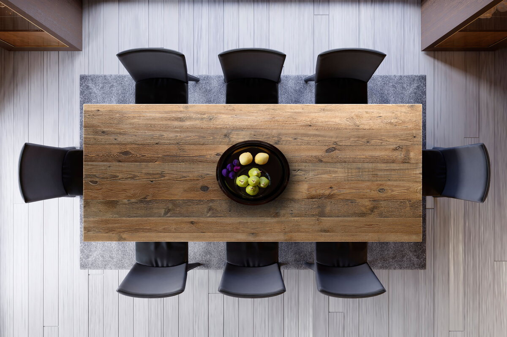
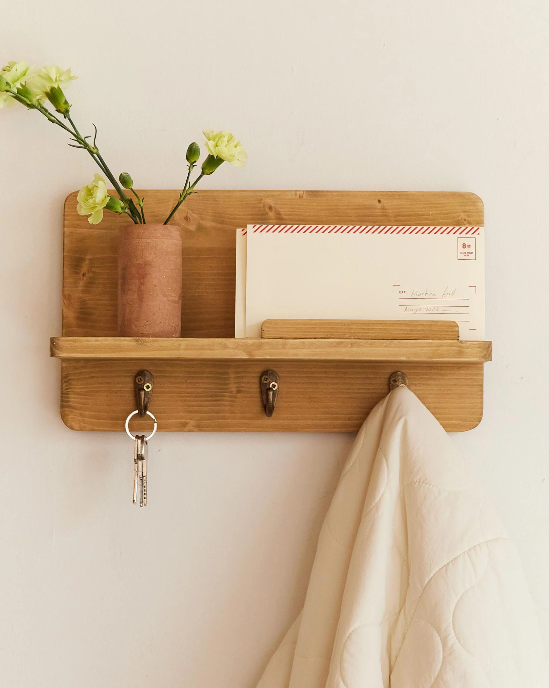
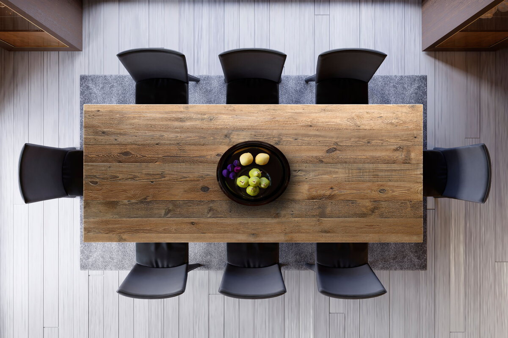
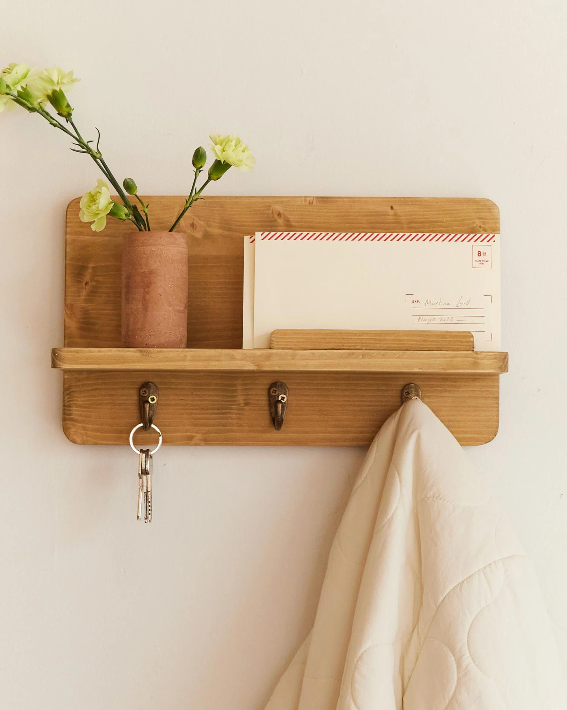

Fondata nel 2010 a Londra, Chilly’s Bottles ha fatto della sostenibilità il fulcro della
sua
attività fin dall'inizio.
Mossa dalla consapevolezza dell'impatto ambientale delle bottiglie di plastica monouso,
l'azienda
si è impegnata a offrire un'alternativa affidabile e attraente.
La visione di Chilly’s non è semplicemente quella di vendere bottiglie, ma di trasformare
abitudini
quotidiane per un impatto positivo sul pianeta.
Con la missione di ridurre l'impatto ambientale delle bottiglie di plastica monouso, Chilly’s si
impegna a fornire prodotti sostenibili e di alta qualità che ispirino un cambiamento positivo nelle
abitudini di consumo.
L’obbiettivo dell'azienda è quella di un mondo in cui l'uso responsabile delle risorse è la
norma, in
cui ogni individuo si sente responsabile della protezione del pianeta e delle generazioni
future.
L'azienda si impegna a perseguire un percorso di miglioramento continuo, alla
ricerca costante
di soluzioni più sostenibili e innovative.
Le bottiglie Chilly’s sono prevalentemente realizzate in acciaio inossidabile, scelto per la sua
durabilità e la capacità di mantenere le bevande fredde per 24 ore o calde per 12 ore. L'acciaio
inossidabile è riciclabile al 100%, contribuendo a ridurre i rifiuti plastici. Nel 2024, Chilly’s ha
lanciato una nuova linea di prodotti quasi interamente realizzati con materiali riciclati,
sottolineando il loro impegno verso una produzione più eco-friendly.
La sostenibilità non si ferma alla produzione delle bottiglie: è una filosofia che permea
l'intera
catena di approvvigionamento e distribuzione. Chilly’s ha scelto Asendia come partner logistico
per la
distribuzione dei suoi prodotti, un'azienda impegnata nella neutralità carbonica.
Questo significa che ogni spedizione effettuata da Asendia per conto di Chilly’s è neutrale dal
punto di
vista delle emissioni di carbonio, contribuendo così a ridurre l'impatto ambientale del
trasporto
Chilly’s non si limita a essere un'azienda produttrice di bottiglie, ma si impegna attivamente a
sostenere cause ambientali e sociali che riflettono i suoi valori.
Collaborazioni con organizzazioni come City to Sea, impegnata nella lotta all'inquinamento da
plastica,
testimoniano l'attenzione di Chilly’s verso la promozione di uno stile di vita più
sostenibile.
Attraverso programmi di donazione e iniziative di sensibilizzazione, l'azienda cerca di ispirare
e
coinvolgere la comunità nella protezione dell'ambiente e nella promozione del consumo
responsabile.


 


